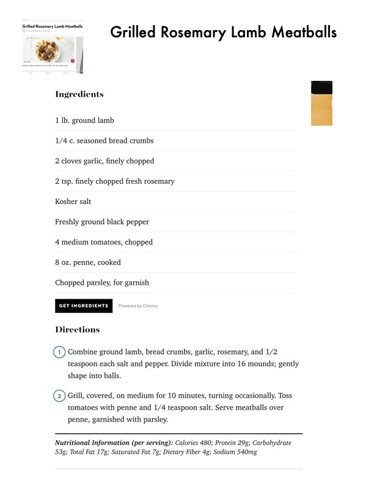

Grilled Rosemary Lamb Meatballs

Original cookbook page 154
Grilled lamb meatballs seasoned with rosemary and garlic, served over penne pasta with fresh chopped tomatoes. Flavorful Mediterranean-style dish.
Prep: 15 minutes • Cook: 10 minutes • Total: 25 minutes
Ingredients
- 1 lb ground lamb
- ¼ cup seasoned bread crumbs
- 2 cloves garlic, finely chopped
- 2 teaspoons finely chopped fresh rosemary
- Kosher salt
- Freshly ground black pepper
- 4 medium tomatoes, chopped
- 8 oz penne, cooked
- Chopped parsley, for garnish
Instructions
- Combine ground lamb, bread crumbs, garlic, rosemary, and ½ teaspoon each salt and pepper. Divide mixture into 16 mounds; gently shape into balls.
- Grill, covered, on medium for 10 minutes, turning occasionally.
- Toss tomatoes with penne and ¼ teaspoon salt.
- Serve meatballs over penne, garnished with parsley.
📝 Recipe Notes
COOKING TIP: If cooking in a pan instead of grilling, use medium-low heat to avoid browning too quickly on one side. Rotate more often for even cooking. Per serving: 480 calories, 29g protein, 53g carbohydrate, 17g total fat, 7g saturated fat, 4g dietary fiber, 540mg sodium. Combined recipe from pages 154-155.
Recipe #154 from collection